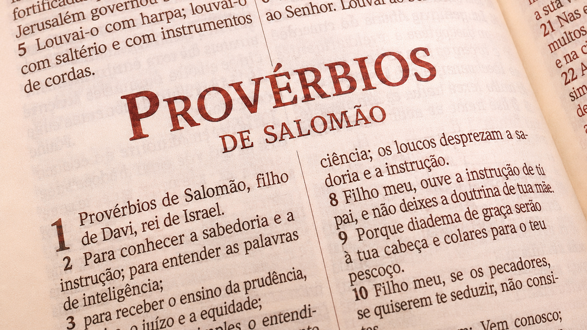

“Para se conhecer a sabedoria e a instrução; para se entenderem as palavras da prudência”, Provérbios 1.2.
Busquemos diariamente do Senhor mais sabedoria, para vivermos no presente século segundo a Sua vontade.
Objetivos da lição
- Enfatizar a aplicação do Livro de Provérbios como fundamento para uma vida.
- Reconhecer o Livro de Provérbios como uma fonte de sabedoria.
- Identificar os princípios do Livro de Provérbios no Novo Testamento.
Esboço
- 1Introdução ao Livro de Provérbios
- 2O nome do livro
- 3A presença do Livro de Provérbios no Novo Testamento
Textos de referência
PROVÉRBIOS 1 2. Para se conhecer a sabedoria e a instrução; para se entenderem as palavras da prudência; 3. Para se receber a instrução do entendimento, a justiça, o juízo e a equidade; 4. Para dar aos simples prudência, e aos jovens conhecimento e bom siso; 5. Para o sábio ouvir e crescer em sabedoria, e o E f Identificar os princípios do Livro de Provérbios no NT. entendido adquirir sábios conselhos; 6. Para entender provérbios e sua interpretação, como também as palavras dos sábios e suas adivinhações. 1. 0 temor do Senhor é o princípio da ciência; os loucos desprezam a sabedoria e a instrução.
Leituras, hinos e oração
Leituras complementares
- SegundaPv 1.7 Um guia para viver bem.
- Terça{ Pv 1.2 Um aprendizado para a vida.
- QuartaPv 18.15 A importância do conhecimento.
- QuintaPv 22.3 Um livro de instruções sábias.
- SextaPv 1.3 Aprendendo a proceder bem.
- SábadoPv 3.19 Deus fez o mundo com sabedoria.
Hinos sugeridos
111,113,147
Motivo de oração
Ore para que a Igreja de Cristo caminhe QUINTA Pv 22.3 Um livro de instruções sábias. SEXTA Pv 1.3 Aprendendo a proceder bem. SÁBADO Pv 3.19 Deus fez o mundo com sabedoria. GD
Introdução
O Livro de Provérbios está entre os Livros Sapienciais, ou livros de sabedoria, e é reconhecido como um verdadeiro manual da sabedoria bíblica pela diversidade de temas que apresenta, tanto para a vida pessoal quanto para
a convivência coletiva. Constitui-se em uma admirável fonte de conselhos firmes e práticos, oferecendo direção segura para a caminhada cristã.
1. Introdução ao Livro de Provérbios
Provérbios é um livro prático. A medida que o estudamos, descobrimos ensinamentos que direcionam a vida cristã. Os Provérbios Bíblicos nos auxiliam
a valorizar a sabedoria, os bons conselhos e as palavras de prudência (Pv 1.2). Assim, encontramos no Livro de Provérbios orientações valiosas para uma vida bem-sucedida.
Um dos Livros Poéticos.
Provérbios - juntamente com Jó, Salmos, Eclesiastes e Cantares de Salomão - faz parte da coletânea dos Livros Poéticos, ou Sapienciais, encontrados no AT, assim chamados devido ao estilo com que foram produzidos originalmente. São textos que, em geral, recorrem à linguagem figurada e
a outros recursos literários para nos transmitir a Palavra de Deus. Esses cinco livros, portanto, são ricos em sabedoria divina para o nosso bom viver (Pv 1.33).
1.2. Síntese do livro.
O Livro de Provérbios é composto de trinta e um capítulos, os quais apresentam princípios práticos, principalmente escritos pelo rei Salomão, mas também por outros autores, como Agur e o rei Lemuel. É admirado por cristãos e também por não cristãos, uma vez que trata de aspectos comuns a todos, como: a excelência da sabedoria (Pv 2.6); o perigo das más companhias (Pv 1.15,16); a advertência sobre servir como fiador para outros (Pv 6.1,2); o risco da soberba, que precede à ruína (Pv 16.18), dentre outros. Por seu caráter pedagógico, o Livro de Provérbios é de grande relevância para quem deseja aprender os princípios divinos para uma vida plena e bem-sucedida (Pv 6.23).
a inspiração que o Espírito Santo concedeu aos escritores que contribuíram para essa coletânea tão rica. Ao percorrer suas páginas, somos conduzidos por princípios que atravessam séculos e continuam funcionando como um farol que aponta direção, discernimento e maturidade espiritual. Não se trata apenas de uma reunião de boas frases, mas de conteúdos moldados e soprados pela ação divina, preservados para orientar cada geração que busca viver com entendimento e temor do Senhor.
1.3. 0 propósito do livro.
O Livro de Provérbios foi escrito para nos ensinar a viver com sabedoria nas situações comuns da vida. Seu propósito é mostrar que a verdadeira compreensão começa quando reconhecemos o Senhor como fonte de todo entendimento (Pv 1.7). A medida que lemos suas páginas, percebemos que Deus nos oferece discernimento para agir com prudência, pois "da sua boca vem o conhecimento e o entendimento"
v 2.6). Provérbios aponta para um jeito de viver marcado por justiça, equilíbrio e maturidade espiritual (Pv 3.13) e nos convida a buscá-la como prioridade (Pv 4.7). Essa sabedoria não é teórica; ela se reflete em nossas escolhas, atitudes e palavras.
O nome do livro O nome original do livro, em hebraico, é Mishlê Shelomoh (Provérbios de Salomão, literalmente), que aponta para o conceito de comparação. Isso porque a raiz hebraica mashal significa: "comparar, assemelhar-se'; de onde vem o sentido de provérbio, parábola, dito sábio, porque compara uma verdade com uma imagem ou situação. Muitas vezes, o termo se refere a ensinos, advertências, parábolas, poemas e cantos. Em português, "Provérbios" tem sua origem em duas palavras latinas: pro (em vez) e verbum (palavra, vocábulo), relacionando-se a ditos que proclamam a veracidade de algo de maneira sucinta.
2. A autoria dos Provérbios. Conforme a Bíblia, o rei Salomão escreveu a maior parte do Livro de Provérbios, o que faz dele o mais notável de seus autores (Pv 1.1), embora não seja o único. Salomão incentiva seus leitores a ouvirem "as palavras dos sábios" (Pv 22.17) e confessa ter recorrido aos provérbios de sábios anônimos (Pv 24.23-34). Além disso, os homens de Ezequias transcreveram alguns provérbios de Salomão, que circulavam nos dias daquele rei (Pv 25.1). O capítulo
Assim, encontramos no Livro de Provérbios orientações valiosas para uma vida bem-sucedida.
6 trinta foi escrito por Agur, filho de Jaque, e o capítulo trinta e um foi escrito pelo rei Lemuel, que transcreveu os ensinamentos de sua mãe.
2.2.A data e o local de autoria do livro. Não se sabe ao certo quando e onde o Livro de Provérbios foi escrito, mas
a tradição aponta para Jerusalém, no reinado de Salomão, no século X a.C., quando o rei, dotado de sabedoria concedida por Deus (1Rs 3.12), reuniu grande parte dos ensinos que formam
a obra. Com o tempo, esse material foi sendo preservado e ampliado, e o próprio texto informa que os escribas do rei Ezequias transcreveram e acrescentaram outros provérbios de Salomão à coletânea já existente (Pv 25.1-29.27). Assim, Provérbios se consolidou como um livro formado ao longo de gerações, reunindo sabedoria que o povo de Deus julgou essencial para a vida.
a data em que foi feita
?.3. 0 apoio teológico. O apoio teológico do Livro de Provérbios está no fato de que sua sabedoria prática nasce de um coração voltado para Deus e submisso à Sua vontade. Seus ensinamentos mostram que a verdadeira vida bem-sucedida não é medida apenas por conquistas humanas, mas pela capacidade de agir com discernimento dentro do mundo que Deus criou. Como observa Derek Kidner (2017, p.14),
a sabedoria apresentada em Provérbios é profundamente teocêntrica e, mesmo quando trata de assuntos cotidianos, orienta o leitor a administrar suas decisões de forma equilibrada, saudável e alinhada aos propósitos divinos.
tem sua origem em duas palavras latinas: pro (em vez) e verbum (palavra, vocábulo), relacionando-se
a ditos que proclamam a veracidade de algo de maneira sucinta.
o livro que vai ao encontro do povo, da vida diária, das práticas em relacionamentos de forma bem prática e instrutiva'.
3. .` Onde Jesus está no Livro de Provérbios? Provérbios faz referência a Cristo apenas de modo indireto. Do verso 22 ao 26 do capítulo 8, a "sabedoria" descreve a si mesma como quem "existe desde a eternidade, antes das obras do Senhor mais antigas" (v.22); que foi "gerada antes de haver fontes de águas" (v.24); "antes que os montes fossem firmados" (v.25) e "antes de o Senhor ter feito a terra, e seus campos, e o princípio do pó do mundo" (v 26).
A Bispo Abner Ferreira (IBE- Instituto Bíblico Ebenézer: Livros Poéticos, p.89): "Em Provérbios, as referências a
Cristo relacionam-se, principalmente, à caracterização da sabedoria, no capítulo 8. Mas o texto faz referência a Cristo apenas de modo indireto. O objetivo é apresentar a sabedoria e seus benefícios de modo sintetizado. Esse discurso não é basicamente Cristológico, mas demonstra que a sabedoria exalada no livro é a mesma pela qual Deus age':
3.3. A intertextualidade de Provérbios no NT.
O Novo Testamento utiliza repetidamente a sabedoria de Provérbios, retomando seus ensinamentos em diferentes temas. A disciplina paterna aparece em Pv 3.11,12 em paralelo com Hb 12.5, 6; o amor que cobre o pecado é visto em Pv 10.12 e reafirmado em 1 Pe 4.8; o respeito às autoridades surge em Pv 24.21 e também em 1 Pe 2.17; a humildade diante dos outros é ensinada em Pv 25.6, 7 e retomada por Jesus em Lc 14.7-11; fazer o bem ao inimigo, presente em Pv 25.21, é reforçado por Paulo em Rm 12.20; a atitude do insensato que volta ao erro, descrita em Pv 26.11, aparece novamente em 2Pe 2.22; a imprevisibilidade da vida ensinada em Pv 27.1 é reafirmada em Tg 4.14; e a reflexão sobre a origem celestial do Filho de Deus em Pv 30.4 encontra eco nas Palavras de Jesus em Jo 3.13.
Paulo falou em `amontoar brasas vivas sobre a cabeça de alguém (Rm 12.20). [...] Outros provérbios de Paulo acham- -se em 1Co 14.8: "Pois se a trombeta der som incerto, quem se preparará para a batalha?" e em Tt 1.15: "Todas as coisas são puras para os puros, todavia, para os impuros e descrentes nada é puro. [...] Também podemos citar 1Tm 6.10: "Porque o amor ao dinheiro é a raiz de todos os males'; um provérbio universalmente conhecido':
Conclusão
CONCLUSÃO O Livro de Provérbios é um guia prático para vivermos com sabedoria, cujo principal princípio é o temor do Senhor. De Salomão aos sábios anônimos, os provérbios bíblicos nos ensinam a escolher o caminho da justiça, da humildade e do discernimento — princípios que Jesus não só citou, mas viveu plenamente. Portanto, que possamos pautar nossa existência na busca por sabedoria, pois quem a obtém descobre um tesouro incalculável.